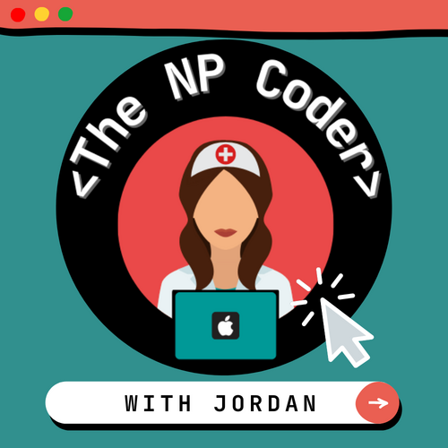

THE NP CODER
HOME
ABOUT
PODCAST
BLOG
WELCOME TO

My name is Jordan. I'm a nurse practitioner who recently fell OUT OF LOVE with my career choice, so here I am embarking on a new adventure. I first started becomming interested in coding when I was around 10 years old. Follow me on my journey!